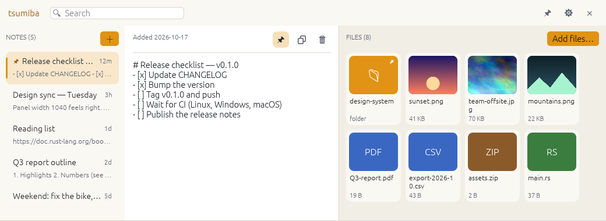
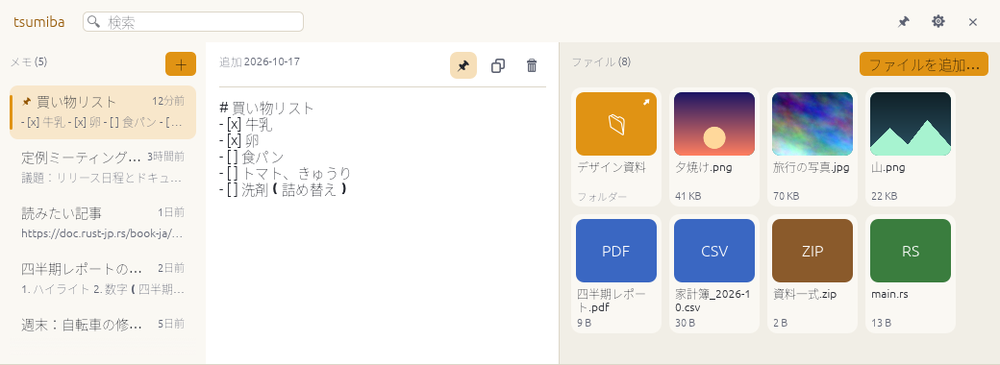
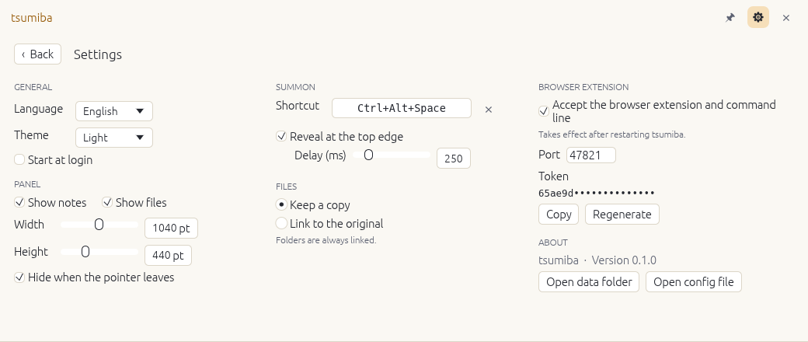
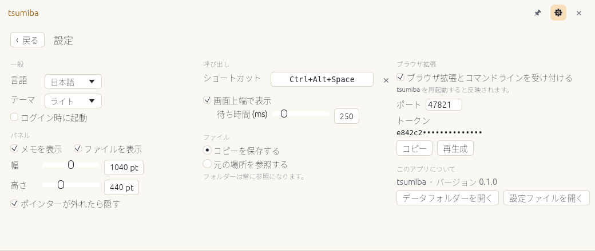

Notesメモ
Plain Markdown files, saved as you type, searchable, pinnable. Deleted notes wait in a trash for 30 days.
普通の Markdown ファイル。入力するそばから保存され、検索もピン留めもできます。削除したメモは 30 日間ゴミ箱に残ります。
tsumiba (積み場, “a place to pile things”) is a memo and file shelf that slides in from the top edge of your screen. Jot a note, drop a file, get back to what you were doing. It hides when you do, and costs nothing while it’s hidden. tsumiba(積み場)は、画面の上端からスライドして現れる、メモとファイルの置き場。メモを書き、ファイルを置いて、元の作業へ。用が済めば自分で引っ込み、隠れている間は何も消費しません。
Free and open source (MIT) · no account · no cloud · no telemetry無料のオープンソース(MIT)· アカウント不要 · クラウドなし · テレメトリなし


The real app, to scale, dropping in from the top edge. Screenshots are from the Linux build. 実際のアプリを実寸の比率で、上端から降ろしたところ。スクリーンショットは Linux 版です。
The shelf is there when you ask and out of the way when you don’t.呼んだときにそこにあり、呼ばないときは邪魔をしません。
Rest the pointer on the top edge, press Ctrl+Alt+Space, click the tray icon, or run tsumiba toggle. Dragging a file to the edge opens it at once.
ポインターを上端に置く。Ctrl+Alt+Space を押す。トレイアイコンをクリックする。または tsumiba toggle。ファイルを上端までドラッグすれば、すぐに開きます。
An empty note is waiting with the cursor in it: just type. Or drop files and folders on the right-hand side.
カーソルの入った空のメモが待っています。そのまま書き始められます。右側にはファイルやフォルダーをドロップします。
Move away, press Esc, or click elsewhere and it slides back up. While it’s hidden it holds no timers and does no work.
ポインターを外す、Esc を押す、ほかをクリックする。すると上へ引っ込みます。隠れている間はタイマーも持たず、何も処理しません。
tsumiba is the part of Unclutter people reach for most — notes and files — rebuilt for every desktop. No clipboard manager, on purpose. tsumiba は、Unclutter のなかでもよく使われる部分、メモとファイルを、あらゆるデスクトップ向けに作り直したもの。クリップボードマネージャーは、あえて入れていません。
Plain Markdown files, saved as you type, searchable, pinnable. Deleted notes wait in a trash for 30 days.
普通の Markdown ファイル。入力するそばから保存され、検索もピン留めもできます。削除したメモは 30 日間ゴミ箱に残ります。
Drop anything. Keep a private copy or just remember where it is. Image thumbnails; open, reveal, copy, save a copy.
何でもドロップ。専用のコピーを保存するか、場所だけを覚えるか。画像はサムネイル表示。開く・フォルダーで表示・コピー・コピーを保存。
Send the page, a selection, a link or an image from Chrome, Edge, Brave or Firefox: right-click, or the popup.
Chrome・Edge・Brave・Firefox から、ページ・選択範囲・リンク・画像を送れます。右クリック、またはポップアップから。
One Rust program for all three, with an honest account of what has been verified where (see below).
ひとつの Rust 製プログラムで 3 つの OS に対応。何をどこで確認したかは、正直に書いてあります(下記)。
No account, no cloud, no telemetry. It listens only on 127.0.0.1, behind a token, and checks the Host and Origin of every request.
アカウント、クラウド、テレメトリはありません。待ち受けるのは 127.0.0.1 だけで、トークンで守られ、すべてのリクエストの Host と Origin を検査します。
MIT licensed. Your data is ordinary files you can back up, sync with any tool, and grep. There is a command line, too.
MIT ライセンス。データは、バックアップも、好きなツールでの同期も、grep もできる普通のファイルです。コマンドラインもあります。
$ tsumiba note "buy milk"
$ tsumiba add report.pdf photos/
$ tsumiba list --json | jq '.notes[].title'config.toml.config.toml でも設定できます。

A small extension for Chrome, Edge, Brave and Firefox sends the page, a selection, a link or an image to the shelf. It only ever talks to your own computer. Chrome・Edge・Brave・Firefox 用の小さな拡張機能が、ページ・選択範囲・リンク・画像を積み場へ送ります。通信先は、あなた自身のコンピューターだけです。
Pair it once with the token from tsumiba token. A quick-note popup and Alt+Shift+S are included. Not in the stores yet: you load it from the release zip.
tsumiba token のトークンで、最初に 1 回だけペアリングします。クイックメモのポップアップと Alt+Shift+S も付いています。ストアにはまだ公開しておらず、リリースの zip から読み込みます。
Honest status: exercised in headless Chromium and linted for Firefox; not yet run in Firefox, Edge or Brave.
正直な現状:ヘッドレス Chromium で動作確認し、Firefox 版は lint を通しています。Firefox・Edge・Brave では、まだ実行していません。
Each installer script downloads the right archive and checks it against the release’s SHA256SUMS.txt first. Or download it by hand.
インストーラースクリプトは、お使いの環境に合うアーカイブをダウンロードし、先にリリースの SHA256SUMS.txt と照合します。手動でダウンロードもできます。
irm https://raw.githubusercontent.com/hjosugi/tsumiba/main/scripts/install.ps1 | iexInstalls under %LOCALAPPDATA%\Programs\tsumiba with a Start menu shortcut; no administrator rights. Or unzip tsumiba-<version>-windows-x86_64.zip and run tsumiba.exe. Releases aren’t code-signed yet, so SmartScreen asks once: More info → Run anyway.
%LOCALAPPDATA%\Programs\tsumiba にインストールし、スタートメニューにショートカットを作ります。管理者権限は不要です。または tsumiba-<version>-windows-x86_64.zip を展開して tsumiba.exe を実行します。まだコード署名されていないため、SmartScreen が一度確認します:詳細情報 → 実行。
curl -fsSL https://raw.githubusercontent.com/hjosugi/tsumiba/main/scripts/install.sh | shInstalls Tsumiba.app (one universal build for Apple silicon and Intel). It is ad-hoc signed, not notarised: right-click → Open the first time, or xattr -dr com.apple.quarantine /Applications/Tsumiba.app.
Tsumiba.app をインストールします(Apple シリコンと Intel の両方に対応するユニバーサルビルド)。ad-hoc 署名のみで公証されていないため、初回は右クリック →「開く」、または xattr -dr com.apple.quarantine /Applications/Tsumiba.app を実行します。
curl -fsSL https://raw.githubusercontent.com/hjosugi/tsumiba/main/scripts/install.sh | shInstalls into ~/.local, no root. Needs OpenGL, libxkbcommon-x11 (X11) or libxkbcommon and libwayland-client (Wayland); see the requirements. On Wayland, bind tsumiba toggle to a key.
~/.local へ、root なしでインストールします。OpenGL と、libxkbcommon-x11(X11)または libxkbcommon と libwayland-client(Wayland)が必要です。動作要件を参照してください。Wayland では tsumiba toggle をキーに割り当てます。
nix run github:hjosugi/tsumibaThe flake also provides a development shell: nix develop.
この flake には開発用シェルもあります:nix develop。
git clone https://github.com/hjosugi/tsumiba
cd tsumiba
cargo build --releaseRust 1.92 or newer. On Linux you also need pkg-config and the development files for libxcb, libxkbcommon, libx11 and wayland.
Rust 1.92 以降が必要です。Linux では pkg-config と、libxcb・libxkbcommon・libx11・wayland の開発用ファイルも必要です。
This is version 0.1.0. Here is exactly how far the checking goes. これはバージョン 0.1.0 です。確認がどこまで進んでいるかを、そのまま書きます。
The window, the top-edge trigger, the shortcut, dragging to the edge, notes, search and Japanese text were exercised end to end under a virtual display.
ウィンドウ、上端トリガー、ショートカット、上端へのドラッグ、メモ、検索、日本語の表示を、仮想ディスプレイ上で端から端まで動作確認しました。
Built, linted and tested by CI, including the storage, the HTTP API and the command line. The window, tray and shortcut have not yet been verified on real machines.
CI で、保存層・HTTP API・コマンドラインを含めてビルド・lint・テストしています。ウィンドウ・トレイ・ショートカットは実機ではまだ確認していません。
An app cannot watch the pointer or grab a key there, so the shelf is an ordinary window: bind tsumiba toggle to a key. Dragging a file out isn’t supported yet.
Wayland ではアプリがポインターを監視することもキーを捕まえることもできないため、積み場は通常のウィンドウになります。tsumiba toggle をキーに割り当ててください。ファイルを外へドラッグする機能は、まだありません。
tsumiba borrows the idea from Unclutter and the habits of its sibling yeet. If dragging files back out is what you need most, yeet and Yoink are built around it; tsumiba cannot do that yet. tsumiba は、Unclutter から発想を、兄弟プロジェクトの yeet から作法を借りています。ファイルをドラッグで取り出すことが一番の目的なら、それを中心に作られた yeet や Yoink のほうが向いています。tsumiba にはまだできません。
| tsumiba | Unclutter | yeet | |
|---|---|---|---|
| Platforms対応 OS | Windows · macOS · Linux | macOS | Windows · Linux (Wayland) |
| Notesメモ | ✓ | ✓ | — |
| File shelfファイルの置き場 | ✓ | ✓ | ✓ |
| Clipboard historyクリップボード履歴 | — (on purpose)—(あえて無し) | ✓ | — |
| Browser extensionブラウザ拡張 | ✓ | not advertised公式サイトに記載なし | — |
| Source and priceソースと価格 | Open source (MIT), freeオープンソース(MIT)、無料 | Closed source, one-time licence (10-day trial)クローズドソース、買い切りライセンス(10 日間の試用) | Open source (MIT), freeオープンソース(MIT)、無料 |